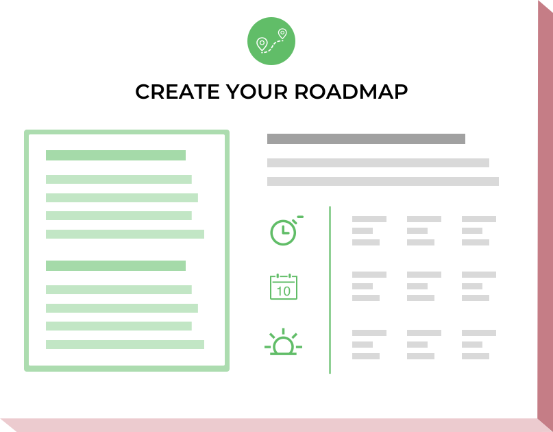
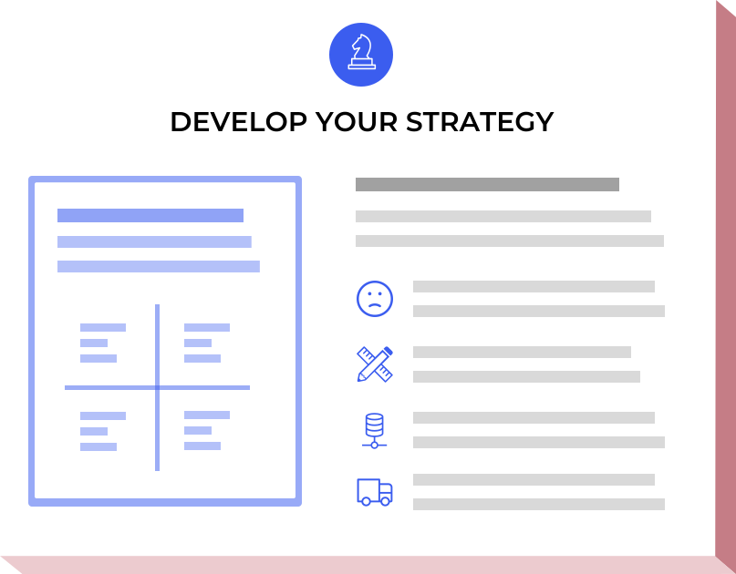
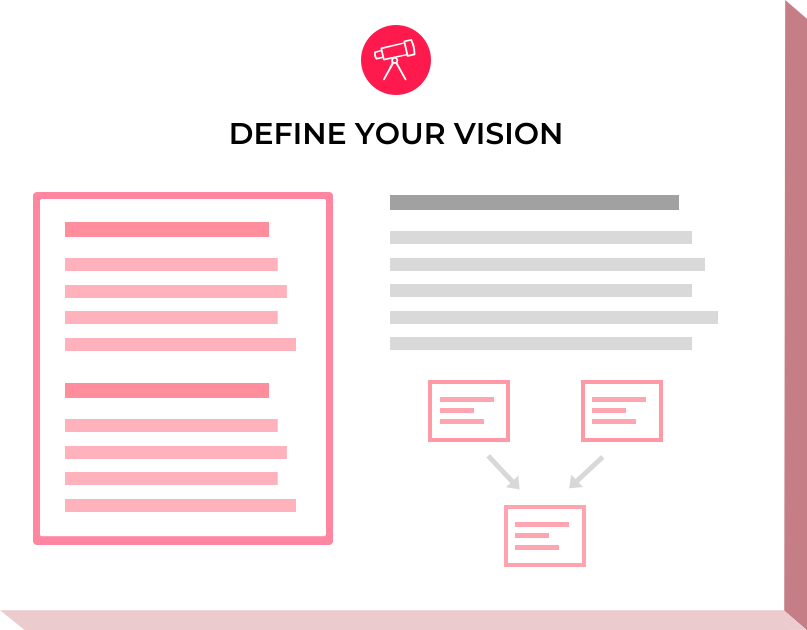
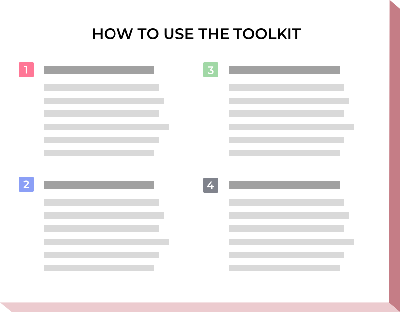

Radical Product is a new way of thinking about creating world-changing products. The free Radical Product Toolkit helps product leaders define their vision and strategy, prioritize their roadmap, and execute intelligently.
Get the free toolkitToo many good products become bloated, fragmented, directionless, and driven by irrelevant metrics. Vision-driven products avoid these “product diseases” by having a clear reason for being, which drives strategy, prioritization, and execution.
The Radical Product Toolkit is being used today by product managers, CEOs, founders, and enterprise innovators at all levels to keep their teams on track, make smarter decisions, and build products with purpose.
To get started, just download the free Radical Product Toolkit and work through the strategic exercises with your team. If you need hands-on help, we're here for you.
The Radical Product Toolkit has really helped us clarify our product vision and strategy. We’ve used it to prioritize features, track “vision debt”, and keep the team aligned as we’ve grown from three to fifteen people!
What started as a framework for building successful products has now become a global movement of leaders creating purpose-driven change through their products. Radhika Dutt is a product leader and entrepreneur who created the toolkit together with Geordie Kaytes and Nidhi Aggarwal in 2017.
Learn more about how this new way of thinking started.
What's in the toolkit?If you want hands-on help integrating Radical Product thinking into your organization, we offer coaching, training, and workshops to individuals and teams. Please get in touch below to start the conversation.